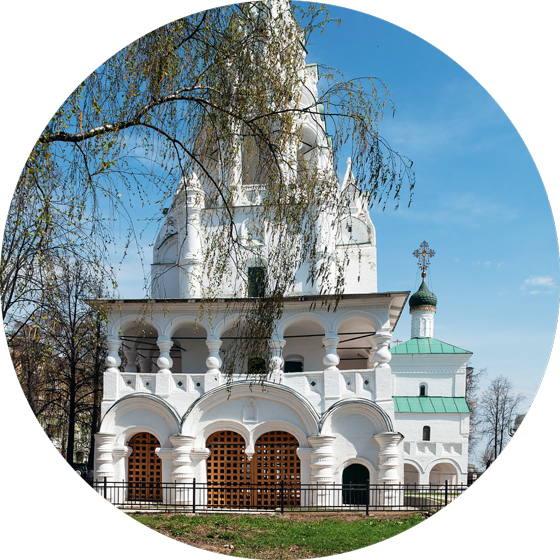
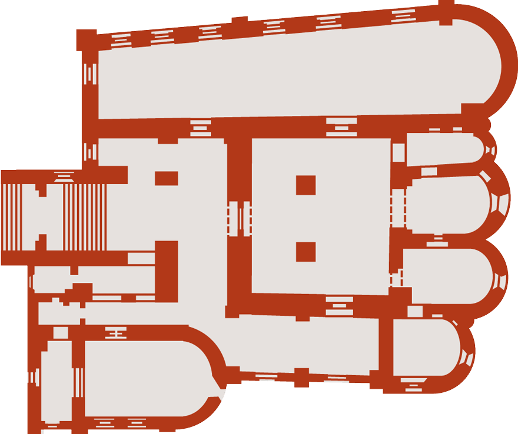

|  |  |
фотографии |
план храма |
Среди ярославских храмов церковь Рождества особенно интересна своим архитектурным ансамблем, в который входит и отдельно стоящая звонница, в былые времена соединённая с церковью. Сама церковь стала одной из первых в городе, где складывался тип ярославской архитектурной композиции: центральный объём храма, окружённый с трёх сторон галереей, которая, в свою очередь, имеет на востоке завершение — приделы. Кроме северо-восточного Никольского и юго-восточного придела в честь Пяти персидских мучеников (в том числе и небесного покровителя одного из братьев Назарьевых — Анкидина), были ещё приделы Петра и Павла (под Никольским), Иоакима и Анны (в самой церкви) и Казанский (юго-западный; в честь того, что в этом месте в 1609 году ярославцы прятали икону Казанской Богоматери во время осады города поляками). Над Казанским приделом установлен тонкой работы корсунский крест XVIII века (корсунскими подобные кресты называли по названию города Корсуни — Херсонеса, откуда они получили своё распространение). В наружном архитектурном убранстве церкви, так же как и внутри, для облицовки печей впервые были использованы муравленые, то есть зелёные, как трава-мурава, изразцы; те, что мы видим на церкви сейчас, — большей частью воссозданы в ходе реставрации церкви во второй половине XX века.
Особое внимание стоит уделить кружевной колокольне с большим шатром в центре и двумя малыми, подчёркивающими вертикальное устремление всей постройки. Пропорции, которые мы видим сейчас, несколько отличаются от первоначальных, ещё более лёгких. Сама Христорождественская церковь стоит сейчас почти на метр ниже земли — за почти четыре века так поднялся культурный слой. Ещё одна интересная особенность — переход от Казанского придела к приделу Пяти мучеников с аркой и стеной галереи, отходящей непосредственно от апсиды. Это результаты многочисленных перестроек и добавления новых элементов, не предусмотренных с самого начала, — следы жизни памятника в течение веков.
Внутри церкви, кроме росписей 1683 года в центральном объёме храма, предположительно выполненных ярославскими мастерами Дмитрием Семёновым и Фёдором Игнатьевым (в данном случае своих автографов художники не оставили), и более поздних росписей других частей, обратите внимание на временно хранящиеся здесь на галерее снятые со стен разрушенных ярославских церквей фрески.